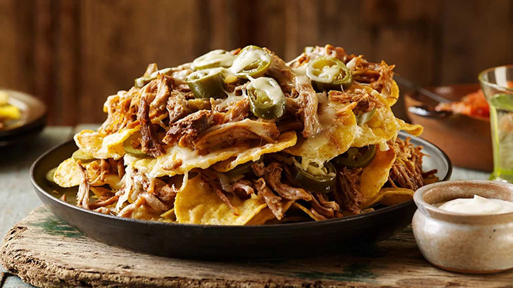

This nacho dish is easy to prepare, but things can get quite messy when consuming it. Pulled pork nachos are made by combining nachos with pulled pork, shredded cheese, beans, corn, sour cream, guacamole, and salsa. In order to prepare the dish, tortilla chips are first layered in a baking dish, then topped with shredded cheese.
Meal prep time : 25 minutes
Servings : 10